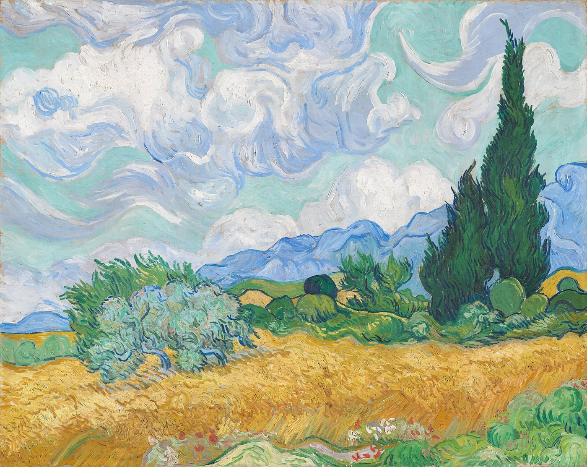

Français · 5e SEGPA · Voyager en poésie
Voyager en poésie
Du monde entier au cœur du monde, avec Gautier, Rimbaud, Richepin et Sindbad.
Mise en situation
Lire, voyager, inviter
Inviter quelqu’un et lui décrire le lieu rêvé.
Français · 5e SEGPA
Voyager en poésie
Du monde entier au cœur du monde
BO n° 10 · 5 mars 2026
Partir en bateau, à pied, en rêve.
Lire, dire, écrire son voyage.
Pourquoi cette séquence ?
Le programme de 5e t’invite à voyager en poésie. Les mots font partir loin, et ils font aussi voyager en toi.
Tu vas lire à voix haute, apprendre un refrain et écrire ton propre poème de voyage.
Jeu · « La valise des mots »
Les élèves fabriquent les cartes, puis jouent. Chaque joueur tire une carte de chaque paquet et invente un vers au futur ou à l’impératif.
- en Norvège
- à Java
- au Japon
- aux Antilles
- dans la Baltique
- sur une île‑baleine
- au pays du rêve
- dans les blés
- en barque
- à pied
- en train
- à dos d’oiseau
- en bateau à voile
- en rêve
- le vent sur ma tête
- le sel sur mes lèvres
- l’herbe fraîche
- le soleil chaud
- la pluie fine
- le silence
- J’irai… …, je sentirai…
- Viens… … : là‑bas, c’est…
Voir la correction
Exemple avec « au Japon », « en train », « le vent sur ma tête » : « J’irai au Japon en train, je sentirai le vent sur ma tête. »
Pas de points, pas de gagnant : chaque équipe ajoute deux cartes de son invention dans chaque paquet, puis échange sa valise avec une autre équipe.
Badges d’effort
Je sais faire
L’élève coche ce qu’il sait faire. On ne note pas ce qui manque : on le retravaille au prochain palier.
Aménagements pour les élèves dys
- Textes courts, mots difficiles expliqués juste en dessous.
- Bouton Écouter (voix de l’ordinateur), en vitesse normale ou lente.
- Lecture du texte par le professeur avant le travail écrit ; Sindbad est une lecture offerte.
- Fiches à trous avec banque de mots, et bouton Vérifier pour se corriger seul.
- Pour la poésie : syllabes séparées par des points dans la version dys, un geste par vers pour mémoriser.
- À l’évaluation : réciter deux vers seulement si besoin, consignes lues à voix haute, temps majoré, poème possible en dictée à l’adulte.
Les six leçons
« Où voulez‑vous aller ? »
À l’oral
On écoute le poème deux fois, puis toute la classe dit le refrain en chœur, doucement puis plus fort.
À l’écrit
Je réponds aux questions en une phrase et je fais les exercices.

Dites, la jeune belle,Théophile Gautier, « Barcarolle », La Comédie de la Mort, Desessart, 1838, p. 309‑311. Texte : Wikisource, domaine public.
Où voulez-vous aller ?
La voile ouvre son aile,
La brise va souffler !
L’aviron est d’ivoire,
Le pavillon de moire,
Le gouvernail d’or fin ;
J’ai pour lest une orange,
Pour voile, une aile d’ange ;
Pour mousse, un séraphin.
voile : grande toile qui pousse le bateau avec le vent. brise : vent léger. aviron : rame. pavillon : drapeau du bateau. moire : tissu brillant aux reflets qui changent. gouvernail : pièce qui dirige le bateau. lest : poids qui rend le bateau stable. mousse : jeune apprenti marin. séraphin : ange.
- Qui parle ? À qui parle‑t‑il ?
- Quelle question revient deux fois ?
- Le bateau est‑il un bateau ordinaire ? Relève deux matières précieuses.
- Le marin parle à…
- La question qui revient est : « … »
- Le bateau n’est pas ordinaire : l’aviron est en…, le gouvernail en…
Voir la correction
1. Le marin, qui dit « je » (« J’ai pour lest une orange »), parle à « la jeune belle ».
2. « Où voulez‑vous aller ? »
3. Non, c’est un bateau de rêve : l’aviron est en ivoire, le gouvernail en or fin, le pavillon en moire ; il y a même une aile d’ange et un séraphin.
La spirale de Gorse · la « Barcarolle »
Je remplis la spirale en quatre tours. À chaque tour, je lis l’exemple, puis je fais pareil.
- Tour 1 · Je remarque. Qu’est-ce qui revient dans le poème ?
Exemple : Le mot « aile » revient deux fois : « La voile ouvre son aile » et « une aile d’ange ».
À toi : Quelle question revient deux fois ? - Tour 2 · Je repère. Quels mots montrent un bateau de rêve ?
Exemple : « L’aviron est d’ivoire » : l’ivoire est une matière précieuse.
À toi : Trouve une autre matière précieuse au vers 7. - Tour 3 · Je comprends. Qui parle ? À qui ?
Exemple : « J’ai pour lest une orange » : quelqu’un dit « je ». C’est le marin.
À toi : À qui parle le marin ? Relève les mots du vers 1. - Tour 4 · Je trouve le sens. Que veut le marin ?
Exemple : « La brise va souffler ! » : le vent arrive, le bateau peut partir.
À toi : Que veut le marin quand il demande « Où voulez-vous aller ? » ?
Version prof. Spirale remplie, à projeter après le travail des élèves.
Voir la correction
1. « Où voulez-vous aller ? » revient deux fois.
2. « Le gouvernail d’or fin » : l’or est précieux.
3. « Dites, la jeune belle » : le marin parle à une jeune femme.
4. Le marin invite la jeune belle à partir avec lui sur un bateau de rêve : le poème est une invitation au voyage.
La spirale, version dys. Une question à chaque tour. Je réponds avec quelques mots.
Voir les réponses
1. Une question revient
2. Le gouvernail en or
3. Le marin parle à la belle
4. Il invite la belle au voyage
Point de langue · la phrase interrogative
Ce que je veux dire : je veux demander à quelqu’un où il veut aller.
Pour poser une question, on écrit une phrase interrogative. Elle finit toujours par un point d’interrogation (?). Il y a trois façons de demander la même chose :
| Quand je parle avec un copain | Partout, à l’oral et à l’écrit | À l’écrit soigné, comme Gautier |
|---|---|---|
| Vous voulez aller où ? | Où est‑ce que vous voulez aller ? | Où voulez‑vous aller ? |
Dans la troisième façon, le sujet passe après le verbe, avec un trait d’union : voulez‑vous, veux‑tu, part‑il.
Les mots pour demander : où (le lieu), quand (le moment), comment (la manière), pourquoi (la raison), qui (la personne).
Point prof
Programme de 5e (BO n° 10 du 5 mars 2026) : « Identifier trois types de phrases et analyser leurs effets dans un texte » et « Découvrir et comprendre les différences entre grammaire de l’écrit et grammaire de l’oral ».
On part de la question que les élèves posent spontanément à l’oral, puis on la fait monter d’un registre. En SEGPA, on exige le point d’interrogation et le trait d’union de l’inversion avec un pronom sujet ; on ne traite pas l’inversion complexe (« Le bateau part‑il ? »). Faire dire les trois versions à voix haute avant de les écrire.
Exercice 1 · Je complète la question
Banque de mots : Où · voulez · Quand
« ________ voulez‑vous aller ? » · « _________ partons‑nous ? » · « Où __________‑vous aller ? »
Voir la correction
« Où voulez‑vous aller ? » · « Quand partons‑nous ? » · « Où voulez‑vous aller ? »
Exercice 2 · Je choisis le bon mot pour demander
1. Je veux savoir le lieu : part le bateau ?
2. Je veux savoir le moment : souffle la brise ?
3. Je veux savoir la personne : rame sur le bateau ?
4. Je veux savoir la raison : veux‑tu partir ?
Voir la correction
1. Où · 2. Quand · 3. Qui · 4. Pourquoi.
Exercice 3 · Je passe à l’écrit soigné
Récris chaque question comme Gautier, avec le sujet après le verbe et un trait d’union.
- Tu veux aller où ?
- Vous partez quand ?
- On prend le bateau ?
Voir la correction
1. Où veux‑tu aller ? · 2. Quand partez‑vous ? · 3. Prenons‑nous le bateau ? (ou : Prend‑on le bateau ?)
Exercice 4 · J’invente ma question
Écris une question pour inviter quelqu’un à partir avec toi, puis lis‑la à ton voisin avec la voix qui monte à la fin.
- Dis‑moi, où veux‑tu… ?
- Quand partons‑nous… ?
Voir la correction
Exemples : « Dis‑moi, où veux‑tu aller cet été ? » · « Quand partons‑nous vers la mer ? »
Trois paliers, chacun avance à son rythme
- Palier 1 · avec un coup de pouce. Le professeur lit le poème ; l’élève suit avec le doigt et dit seulement le refrain.
- Palier 2 · en autonomie. Faire les exercices seul, puis appuyer sur Vérifier.
- Palier 3 · pour aller plus loin. Inventer deux vers de plus pour décrire le bateau de rêve : « Le mât est en…, la coque en… ».
« Est‑ce dans la Baltique ? »
À l’oral
On dit le refrain de mémoire, puis on lit la strophe des lieux : une voix par lieu.
À l’écrit
Je relève les lieux et j’écris ma propre strophe de lieux.
Dites, la jeune belle,Théophile Gautier, « Barcarolle », La Comédie de la Mort, Desessart, 1838, p. 309‑311. Texte : Wikisource, domaine public.
Où voulez-vous aller ?
La voile ouvre son aile,
La brise va souffler !
[…]
Est-ce dans la Baltique ?
Sur la mer Pacifique,
Dans l’île de Java ?
Ou bien dans la Norvége,
Cueillir la fleur de neige,
Ou la fleur d’Angsoka ?
[…]
- Menez-moi, dit la belle,
À la rive fidèle
Où l’on aime toujours.
- Cette rive, ma chère,
On ne la connaît guère
Au pays des amours.
la Baltique : mer du nord de l’Europe. le Pacifique : le plus grand océan du monde. Java : grande île d’Indonésie, en Asie. Norvége : orthographe de 1838 ; on écrit aujourd’hui Norvège. fleur d’Angsoka : fleur rouge et orange d’un arbre de l’Inde, l’ashoka. rive : bord de l’eau. fidèle : qui ne change pas. guère : presque pas.
- Quels lieux le marin propose‑t‑il ? Relève‑les.
- Où la belle veut‑elle aller ?
- Ce lieu existe‑t‑il sur une carte ? Que répond le marin ?
- Le marin propose…, … et…
- La belle veut aller à la rive où…
- Le marin répond qu’on ne connaît guère…
Voir la correction
1. La Baltique, la mer Pacifique, l’île de Java, la Norvège (et ses fleurs).
2. « À la rive fidèle / Où l’on aime toujours » : elle veut un lieu où l’amour dure toujours.
3. Non. Le marin répond que cette rive, on ne la connaît guère « au pays des amours ». Le voyage part du monde entier et arrive au cœur : c’est la formule du programme, « du monde entier au cœur du monde ».
La spirale de Gorse · la « Barcarolle », les lieux
Je remplis la spirale en quatre tours. À chaque tour, je lis l’exemple, puis je fais pareil.
- Tour 1 · Je remarque. Qui parle à la fin ?
Exemple : Au début, c’est le marin qui pose la question : « Où voulez-vous aller ? »
À toi : Qui répond à la fin ? Lis la dernière strophe. - Tour 2 · Je repère. Quels lieux le marin propose-t-il ?
Exemple : « Dans l’île de Java » : Java est une île d’Asie.
À toi : Relève deux autres lieux dans la strophe 2. - Tour 3 · Je comprends. Où la belle veut-elle aller ?
Exemple : « Cueillir la fleur de neige » : en Norvège, on cueille une fleur froide.
À toi : Relève le lieu que choisit la belle. - Tour 4 · Je trouve le sens. Ce lieu est-il sur une carte ?
Exemple : Java est sur une carte : je peux le montrer avec le doigt.
À toi : La rive fidèle est-elle sur une carte ? Lis la réponse du marin.
Version prof. Spirale remplie, à projeter après le travail des élèves.
Voir la correction
1. « Menez-moi, dit la belle » : à la fin, c’est la belle qui parle.
2. « Est-ce dans la Baltique ? » et « Ou bien dans la Norvége » : des pays lointains.
3. « À la rive fidèle » « Où l’on aime toujours » : un lieu où l’amour dure.
4. Non : « Cette rive, ma chère », « On ne la connaît guère ». Le voyage part de la carte et arrive au cœur.
La spirale, version dys. Une question à chaque tour. Je réponds avec quelques mots.
Voir les réponses
1. La belle répond
2. La Baltique, la Norvège
3. Une rive où l’on aime
4. Du monde entier au cœur
Point de langue · dire où l’on va : à, en, au, aux, dans
Ce que je veux dire : je veux nommer le pays ou le lieu où je pars.
Pour dire où l’on va, on met une préposition devant le nom du lieu. Ce groupe est un complément de lieu : il répond à la question « où ? ».
| Le lieu | Je dis | Exemple |
|---|---|---|
| une ville, une petite île | à | à Paris, à Java |
| un pays féminin (souvent en ‑e) | en | en Norvège, en Italie |
| un pays masculin | au | au Japon, au Maroc |
| un nom au pluriel | aux | aux Antilles, aux États‑Unis |
| une mer, un lieu fermé | dans, sur | dans la Baltique, sur la mer Pacifique |
Point prof
Programme de 5e : « Identifier les prépositions, les adverbes et les mots subordonnants » et identifier « les compléments circonstanciels de lieu ». On part du besoin réel : dire où l’on veut aller. Exception à signaler oralement : « au Mexique », « au Cambodge » (masculins en ‑e). Faire manipuler une carte du monde : chaque élève pose un aimant et dit sa phrase.
Exercice 1 · Je complète avec à, en ou au
Banque de mots : en · à · au
Je pars ________ Norvège. Je débarque ________ Java. Je rêve d’aller ________ Japon.
Voir la correction
Je pars en Norvège. Je débarque à Java. Je rêve d’aller au Japon.
Exercice 2 · Je choisis la bonne préposition
1. Le bateau navigue la Baltique.
2. Nous allons Antilles.
3. Elle habite Italie.
4. Il part Maroc.
Voir la correction
1. dans · 2. aux · 3. en · 4. au.
Exercice 3 · Je relève les compléments de lieu
Dans la deuxième strophe, souligne les groupes qui répondent à la question « où ? ».
Voir la correction
dans la Baltique · sur la mer Pacifique · dans l’île de Java · dans la Norvége.
Exercice 4 · J’écris ma strophe de lieux
Comme Gautier, écris trois vers qui proposent trois lieux, avec la bonne préposition.
- Est‑ce en… ?
- Au… ou à… ?
- Ou bien dans… ?
Voir la correction
Exemple : « Est‑ce en Islande ? / Au Sénégal ou à Venise ? / Ou bien dans la mer Rouge ? »
Trois paliers, chacun avance à son rythme
- Palier 1 · avec un coup de pouce. On place les lieux sur une carte du monde avec le professeur avant de lire.
- Palier 2 · en autonomie. Faire les exercices seul, puis appuyer sur Vérifier.
- Palier 3 · pour aller plus loin. Écrire la réponse de la belle avec un lieu inventé : « Menez‑moi… ».
« J’irai loin, bien loin »
À l’oral
On mime le poème vers par vers : marcher, sentir l’herbe, lever la tête dans le vent.
À l’écrit
Je relève les sensations et j’écris ma marche au futur.

Par les soirs bleus d’été, j’irai dans les sentiers,Arthur Rimbaud, « Sensation », mars 1870. Texte : Poésies complètes, Vanier, 1895, p. 53, Wikisource, domaine public.
Picoté par les blés, fouler l’herbe menue :
Rêveur, j’en sentirai la fraîcheur à mes pieds.
Je laisserai le vent baigner ma tête nue !
Je ne parlerai pas, je ne penserai rien :
Mais l’amour infini me montera dans l’âme,
Et j’irai loin, bien loin, comme un bohémien
Par la Nature, - heureux comme avec une femme.
sentier : petit chemin. picoté : piqué légèrement. fouler : marcher sur. menue : fine. baigner : ici, caresser. âme : le cœur, l’intérieur de soi. bohémien : voyageur sans maison, qui va de ville en ville.
- Quand le poète partira‑t‑il ? Où ira‑t‑il ?
- Relève deux sensations : ce qu’il sentira sur son corps.
- Que se passera‑t‑il dans son âme ? Pourquoi peut‑on dire qu’il voyage aussi à l’intérieur de lui ?
- Il partira « par les soirs… ». Il ira dans…
- Il sentira… ; le vent…
- Dans son âme, il y aura… : il voyage aussi dans…
Voir la correction
1. « Par les soirs bleus d’été » ; il ira « dans les sentiers », dans les blés, « loin, bien loin ».
2. Les blés qui le piquent, la fraîcheur de l’herbe à ses pieds, le vent sur sa tête nue.
3. « L’amour infini me montera dans l’âme » : il marche dehors, mais il ressent un grand bonheur dedans. Il voyage du monde jusqu’à son cœur.
La spirale de Gorse · « Sensation » de Rimbaud
Je remplis la spirale en quatre tours. À chaque tour, je lis l’exemple, puis je fais pareil.
- Tour 1 · Je remarque. Quand le poète partira-t-il ?
Exemple : Le poème dit « j’irai » : c’est le futur, il n’est pas encore parti.
À toi : Relève le moment du départ au vers 1. - Tour 2 · Je repère. Que sentira-t-il sur son corps ?
Exemple : « Picoté par les blés » : les blés piquent ses jambes.
À toi : Trouve ce qu’il sentira à ses pieds et sur sa tête (vers 3 et 4). - Tour 3 · Je comprends. Que se passera-t-il dans son âme ?
Exemple : « Je ne parlerai pas, je ne penserai rien » : il sera calme, en silence.
À toi : Lis le vers 6. Qu’est-ce qui montera dans son âme ? - Tour 4 · Je trouve le sens. Où voyage-t-il vraiment ?
Exemple : Il marche « dans les sentiers » : c’est un voyage dehors.
À toi : Il voyage aussi dedans. Où ? Lis les deux derniers vers.
Version prof. Spirale remplie, à projeter après le travail des élèves.
Voir la correction
1. « Par les soirs bleus d’été » : il partira l’été, le soir.
2. « la fraîcheur à mes pieds » et « le vent baigner ma tête nue ».
3. « l’amour infini me montera dans l’âme » : il sera heureux à l’intérieur.
4. « Et j’irai loin, bien loin, comme un bohémien » : il marche dans la nature, « heureux comme avec une femme ». Il voyage aussi dans son cœur.
La spirale, version dys. Une question à chaque tour. Je réponds avec quelques mots.
Voir les réponses
1. Les soirs bleus d’été
2. La fraîcheur, le vent
3. Un grand amour en lui
4. Dehors et au fond de son cœur
Point de langue · le futur simple
Ce que je veux dire : je veux dire ce que je ferai pendant mon voyage.
Rimbaud parle de ce qui n’est pas encore arrivé : il emploie le futur simple. Pour les verbes en ‑er, on garde tout l’infinitif et on ajoute la terminaison :
| Personne | Terminaison | laisser | sentir |
|---|---|---|---|
| je | ‑ai | je laisserai | je sentirai |
| tu | ‑as | tu laisseras | tu sentiras |
| il, elle, on | ‑a | il laissera | elle sentira |
| nous | ‑ons | nous laisserons | nous sentirons |
| vous | ‑ez | vous laisserez | vous sentirez |
| ils, elles | ‑ont | ils laisseront | elles sentiront |
Attention : aller change complètement : j'irai, tu iras, il ira. Être : je serai. Voir : je verrai. Faire : je ferai.
Point prof
Programme de 5e : « Comprendre la morphologie des temps simples (présent, futur simple, imparfait, passé simple de l’indicatif, conditionnel et présent de l’impératif) » et « Consolider la conjugaison des verbes réguliers et des principaux verbes irréguliers en fonction de la variation de leur radical ».
On part du besoin : se projeter dans un voyage. Faire repérer les cinq futurs du poème (irai, sentirai, laisserai, parlerai, penserai) et la marque commune « r » avant la terminaison. En SEGPA, on travaille d’abord la 1re personne, celle du poème, puis on élargit. Point de vigilance à l’écrit : je parlerai (futur) et je parlerais (conditionnel) se prononcent presque pareil.
Exercice 1 · Je complète avec le futur du poème
Banque de mots : irai · sentirai · laisserai
Par les soirs bleus d’été, j’________ dans les sentiers. J’en ____________ la fraîcheur à mes pieds. Je _____________ le vent baigner ma tête nue.
Voir la correction
j’irai · j’en sentirai · je laisserai
Exercice 2 · Je choisis la bonne forme
1. Demain, nous dans les blés.
2. Tu la mer.
3. Elles à l’aube.
4. Je heureux.
Voir la correction
1. marcherons · 2. verras · 3. partiront · 4. serai.
Exercice 3 · Je mets au futur
Récris au futur simple : « Je marche. Je regarde le ciel. Je vais loin. »
Voir la correction
Je marcherai. Je regarderai le ciel. J’irai loin.
Exercice 4 · J’écris ma marche au futur
Écris quatre phrases au futur sur une marche que tu imagines : où tu iras, ce que tu verras, ce que tu sentiras.
- Par les matins de…, j’irai…
- Je verrai…
- Je sentirai…
- Je ne penserai à rien, mais…
Voir la correction
Exemple : « Par les matins d’hiver, j’irai sur la plage. Je verrai les mouettes. Je sentirai le sel sur mes lèvres. Je ne penserai à rien, mais je serai heureux. »
Trois paliers, chacun avance à son rythme
- Palier 1 · avec un coup de pouce. Le professeur lit chaque vers et fait un geste : marcher, sentir, écouter le vent.
- Palier 2 · en autonomie. Faire les exercices seul, puis appuyer sur Vérifier.
- Palier 3 · pour aller plus loin. Écrire un vers qui commence par « Par les soirs… » et qui finit par une rime en ‑ier ou en ‑é.
« Regardez‑les passer ! »
À l’oral
On lit le poème à deux voix : une voix pour « Regardez‑les passer ! », une autre pour la suite.
À l’écrit
Je relève les mots du pays rêvé et j’écris mes trois lignes « C’est… ».
Regardez-les passer ! Eux, ce sont les sauvages.Jean Richepin, « Oiseaux de passage », La Chanson des gueux, Maurice Dreyfous, 1881, p. 62‑66, extraits. Texte : Wikisource, domaine public.
Ils vont où leur désir le veut, par-dessus monts,
Et bois, et mers, et vents, et loin des esclavages.
[…]
Là-bas, c’est le pays de l’étrange et du rêve,
C’est l’horizon perdu par delà les sommets,
C’est le bleu paradis, c’est la lointaine grève
Où votre espoir banal n’abordera jamais.
sauvages : ici, libres, pas apprivoisés. désir : ce que l’on a très envie de faire. esclavages : ici, tout ce qui enferme. par delà : de l’autre côté de. grève : plage de sable ou de cailloux. banal : ordinaire, sans surprise. aborder : arriver au bord, en bateau.
- À qui le poète dit‑il « Regardez‑les » ? Qui sont « les sauvages » ?
- Par où passent les oiseaux ? Relève les lieux.
- Relève les mots qui décrivent le pays où ils vont.
- Le poète parle aux oiseaux de la ferme ; les sauvages sont…
- Ils passent par‑dessus…
- Le pays où ils vont est le pays de…
Voir la correction
1. Aux oiseaux de la cour de ferme (les poules, les oies, les canards). « Les sauvages », ce sont les oiseaux de passage, libres.
2. « par‑dessus monts, / Et bois, et mers, et vents ».
3. « le pays de l’étrange et du rêve », « l’horizon perdu », « le bleu paradis », « la lointaine grève ».
La spirale de Gorse · « Oiseaux de passage » de Richepin
Je remplis la spirale en quatre tours. À chaque tour, je lis l’exemple, puis je fais pareil.
- Tour 1 · Je remarque. Qui donne un ordre ?
Exemple : « Regardez-les passer ! » : c’est un ordre, avec un point d’exclamation.
À toi : À qui le poète parle-t-il ? Lis le contexte. - Tour 2 · Je repère. Par où passent les oiseaux sauvages ?
Exemple : « par-dessus monts » : ils volent au-dessus des montagnes.
À toi : Relève trois autres lieux au vers 3. - Tour 3 · Je comprends. Pourquoi sont-ils « les sauvages » ?
Exemple : « Ils vont où leur désir le veut » : ils vont où ils veulent.
À toi : Relève ce qu’ils laissent derrière eux au vers 3. - Tour 4 · Je trouve le sens. Comment est le pays où ils vont ?
Exemple : « C’est le bleu paradis » : un pays de rêve, très beau.
À toi : Relève un autre « C’est… » qui décrit ce pays.
Version prof. Spirale remplie, à projeter après le travail des élèves.
Voir la correction
1. Le poète parle aux oiseaux de la ferme : les poules, les oies et les canards.
2. « Et bois, et mers, et vents » : ils passent partout.
3. « loin des esclavages » : rien ne les enferme.
4. « Là-bas, c’est le pays de l’étrange et du rêve » : seuls les oiseaux libres y arrivent ; « votre espoir banal n’abordera jamais ».
La spirale, version dys. Une question à chaque tour. Je réponds avec quelques mots.
Voir les réponses
1. Il parle à la ferme
2. Bois, mers, vents
3. Ils sont libres
4. Un pays de rêve, pour les libres
Point de langue · montrer et décrire : l’impératif et « c’est »
Ce que je veux dire : je veux faire regarder quelque chose, puis décrire mon pays rêvé.
1. Pour donner un ordre ou un conseil, on emploie l'impératif. Il n’y a pas de sujet et seulement trois personnes :
| Personne | regarder | partir | venir |
|---|---|---|---|
| tu | regarde | pars | viens |
| nous | regardons | partons | venons |
| vous | regardez | partez | venez |
Attention : avec « tu », les verbes en ‑er ne prennent pas de s : regarde, écoute, imagine.
2. Pour décrire un lieu, on peut répéter c’est au début des vers, comme Richepin : « Là‑bas, c’est le pays… / C’est l’horizon… / C’est le bleu paradis… ». Répéter le même mot en début de vers s’appelle une anaphore.
Point prof
Programme de 5e : « Comprendre la morphologie des temps simples […] et présent de l’impératif » et « Approfondir sa maitrise des modes indicatif et impératif » ; « Identifier trois types de phrases » (la phrase injonctive).
On part du besoin de la tâche finale : inviter quelqu’un et lui décrire le lieu rêvé. Faire comparer « Regardez‑les ! » (impératif avec pronom, trait d’union) et « Vous les regardez. » (indicatif). L’anaphore « C’est… » donne une structure simple et rassurante aux élèves qui ont peur d’écrire.
Exercice 1 · Je complète à l’impératif
Banque de mots : Regarde · Écoutez · Partons
___________ les oiseaux, toi ! ___________ le vent, vous deux ! ___________ ensemble, nous tous !
Voir la correction
Regarde · Écoutez · Partons
Exercice 2 · Impératif ou pas ?
1. « Regardez‑les passer ! »
2. « Ils vont où leur désir le veut. »
3. « Viens avec moi ! »
4. « Tu regardes le ciel. »
Voir la correction
1. impératif · 2. présent · 3. impératif · 4. présent (il y a un sujet, « tu »).
Exercice 3 · J’enlève le s en trop
Corrige : « Regardes ! Écoutes ! Imagines ! »
Voir la correction
Regarde ! Écoute ! Imagine ! (verbes en ‑er : pas de s avec « tu » à l’impératif).
Exercice 4 · Mon pays rêvé avec « c’est »
Écris trois lignes qui commencent par « Là‑bas, c’est… », « C’est… », « C’est… ».
Voir la correction
Exemple : « Là‑bas, c’est le pays des volcans bleus, / C’est la mer qui chante la nuit, / C’est l’île où personne ne crie. »
Trois paliers, chacun avance à son rythme
- Palier 1 · avec un coup de pouce. Le professeur lit ; l’élève dit seulement « Regardez‑les passer ! » en montrant le ciel.
- Palier 2 · en autonomie. Faire les exercices seul, puis appuyer sur Vérifier.
- Palier 3 · pour aller plus loin. Écrire la réponse d’un oiseau sauvage aux poules : « Venez avec nous ! Là‑bas, c’est… ».
L’île qui était une baleine
À l’oral
On écoute les deux parties ; à la fin, chacun raconte l’histoire en une phrase à son voisin.
À l’écrit
Je trie le décor et les actions, puis j’invente une île étrange.

Partie 1
« Premier voyage de Sindbad le marin », Les Mille et Une Nuits, traduction d’Antoine Galland, Le Normant, 1806, tome 2, p. 66‑83, extrait, orthographe modernisée. Texte : Wikisource, domaine public.Un jour que nous étions à la voile, le calme nous prit vis-à-vis une petite île presque à fleur d’eau, qui ressemblait à une prairie par sa verdure. Le capitaine fit plier les voiles, et permit de prendre terre aux personnes de l’équipage qui voulurent y descendre. Je fus du nombre de ceux qui y débarquèrent. Mais dans le temps que nous nous divertissions à boire et à manger, et à nous délasser de la fatigue de la mer, l’île trembla tout à coup, et nous donna une rude secousse…
Partie 2
« Premier voyage de Sindbad le marin », Les Mille et Une Nuits, traduction d’Antoine Galland, Le Normant, 1806, tome 2, p. 66‑83, extrait, orthographe modernisée. Texte : Wikisource, domaine public.On s’aperçut, dit-il, du tremblement de l’île dans le vaisseau, d’où l’on nous cria de nous rembarquer promptement ; que nous allions tous périr ; que ce que nous prenions pour une île, était le dos d’une baleine. Les plus diligents se sauvèrent dans la chaloupe, d’autres se jetèrent à la nage. Pour moi, j’étais encore sur l’île, ou plutôt sur la baleine, lorsqu’elle se plongea dans la mer, et je n’eus que le temps de me prendre à une pièce de bois qu’on avait apportée du vaisseau pour faire du feu.
être à la voile : naviguer. le calme : ici, l’absence de vent. à fleur d’eau : presque au niveau de l’eau. prendre terre : descendre à terre. se divertir : s’amuser. se délasser : se reposer. promptement : vite. périr : mourir. diligents : rapides. chaloupe : petite barque d’un grand bateau.
- À quoi ressemble la petite île ?
- Que font les marins quand ils descendent ?
- Qu’est‑ce que l’île en réalité ? Comment Sindbad se sauve‑t‑il ?
- Regarde l’enluminure : qu’est‑ce qui ressemble au récit de Sindbad ?
- L’île ressemble à…
- Les marins…, … et…
- L’île est en réalité…. Sindbad s’accroche à…
- Sur l’image, comme dans le récit, …
Voir la correction
1. À une prairie, à cause de sa verdure ; elle est presque au niveau de l’eau.
2. Ils boivent, mangent et se reposent de la fatigue de la mer.
3. C’est le dos d’une baleine. Sindbad s’accroche à une pièce de bois apportée pour faire du feu.
4. Des hommes sont descendus sur le dos d’une baleine et y font chauffer une marmite sur un feu, comme les marins de Sindbad.
La spirale de Gorse · le premier voyage de Sindbad
Je remplis la spirale en quatre tours. À chaque tour, je lis l’exemple, puis je fais pareil.
- Tour 1 · Je remarque. Comment est l’île ?
Exemple : « presque à fleur d’eau » : l’île est presque au niveau de l’eau.
À toi : À quoi ressemble l’île ? Lis la phrase 1. - Tour 2 · Je repère. Que font les marins sur l’île ?
Exemple : « à boire » : les marins boivent.
À toi : Relève deux autres actions dans la même phrase. - Tour 3 · Je comprends. Que se passe-t-il tout à coup ?
Exemple : « l’île trembla tout à coup » : c’est une action soudaine, au passé simple.
À toi : Qu’est-ce que l’île en réalité ? Lis la partie 2. - Tour 4 · Je trouve le sens. Comment Sindbad se sauve-t-il ?
Exemple : « Les plus diligents se sauvèrent dans la chaloupe » : les plus rapides prennent la barque.
À toi : Et Sindbad ? Lis la fin de la partie 2.
Version prof. Spirale remplie, à projeter après le travail des élèves.
Voir la correction
1. « qui ressemblait à une prairie par sa verdure ».
2. « à manger, et à nous délasser de la fatigue de la mer ».
3. « le dos d’une baleine » : l’île n’est pas une île.
4. « me prendre à une pièce de bois » : le voyage devient une aventure étrange.
La spirale, version dys. Une question à chaque tour. Je réponds avec quelques mots.
Voir les réponses
1. Une prairie verte
2. Manger, se reposer
3. L’île est une baleine
4. Une pièce de bois le sauve
Point de langue · raconter : l’imparfait et le passé simple
Ce que je veux dire : je veux raconter ce qui s’est passé pendant un voyage.
Pour raconter au passé, Sindbad emploie deux temps :
| L’imparfait : le décor, ce qui dure | Le passé simple : les actions, ce qui arrive d’un coup |
|---|---|
| nous étions à la voile · qui ressemblait à une prairie · j’étais encore sur l’île | l’île trembla · les plus diligents se sauvèrent · d’autres se jetèrent à la nage · elle se plongea |
Au passé simple, avec il ou elle, les verbes en ‑er finissent par ‑a (elle trembla) ; avec ils ou elles, par ‑èrent (ils se sauvèrent). À l’imparfait, la terminaison est ‑ait avec il, elle (qui ressemblait).
Point prof
Programme de 5e : « Comprendre la morphologie des temps simples (présent, futur simple, imparfait, passé simple de l’indicatif […]) » et « Approfondir sa maitrise des valeurs temporelles et aspectuelles des temps simples et composés ».
En SEGPA, on vise la reconnaissance du passé simple aux 3es personnes, à la lecture ; à l’écrit, l’élève peut raconter au passé composé et garder l’imparfait pour le décor. Le texte est en orthographe modernisée (Galland écrit « isle », « étoit ») : on peut montrer une ligne de l’original sur Wikisource pour faire observer l’évolution de l’orthographe.
Exercice 1 · Je complète avec les verbes du texte
Banque de mots : trembla · ressemblait · étions
Nous __________ à la voile. La petite île _______________ à une prairie. Tout à coup, l’île ___________.
Voir la correction
Nous étions à la voile. La petite île ressemblait à une prairie. Tout à coup, l’île trembla.
Exercice 2 · Décor ou action ?
1. « qui ressemblait à une prairie » :
2. « l’île trembla tout à coup » :
3. « d’autres se jetèrent à la nage » :
4. « j’étais encore sur l’île » :
Voir la correction
1. décor (imparfait) · 2. action (passé simple) · 3. action (passé simple) · 4. décor (imparfait).
Exercice 3 · Je trie les verbes
Range dans deux colonnes : débarquèrent, divertissions, se plongea, prenions, cria.
Voir la correction
Imparfait : divertissions, prenions. Passé simple : débarquèrent, se plongea, cria.
Exercice 4 · J’invente une île étrange
En trois phrases, raconte l’arrivée sur une île qui n’est pas une vraie île : une phrase de décor à l’imparfait, puis deux actions.
- L’île était…, elle ressemblait à…
- Soudain, l’île…
- Nous avons couru vers… (ou : nous courûmes vers…)
Voir la correction
Exemple : « L’île était ronde et douce, elle ressemblait à un gros coussin. Soudain, l’île bâilla. Nous avons sauté dans la barque : c’était la tête d’un géant endormi ! »
Trois paliers, chacun avance à son rythme
- Palier 1 · avec un coup de pouce. Le professeur lit ; l’élève lève la main à chaque action (trembla, se sauvèrent, se jetèrent, se plongea).
- Palier 2 · en autonomie. Faire les exercices seul, puis appuyer sur Vérifier.
- Palier 3 · pour aller plus loin. Imaginer la suite : où la pièce de bois emporte‑t‑elle Sindbad ? Trois phrases.
Du monde entier au cœur du monde
À l’oral
Je lis mon poème à voix haute, debout, en regardant la classe.
À l’écrit
J’écris mon poème de voyage avec la boîte à outils.
Ma boîte à outils
- Un refrain, comme Gautier : deux vers qui reviennent.
- Une question, comme le marin : « Où veux‑tu aller ? »
- Un lieu avec la bonne préposition : en, à, au, aux, dans.
- Un futur, comme Rimbaud : « j’irai », « je verrai ».
- Un impératif et « C’est… », comme Richepin : « Regarde ! Là‑bas, c’est… ».
Les étapes
- Je choisis un lieu réel (sur la carte) ou rêvé (comme l’île de Sindbad).
- J’écris mon refrain : une question et une invitation.
- J’écris trois vers : ce que l’on verra, ce que l’on sentira.
- Je remets mon refrain à la fin.
- Je relis : un point d’interrogation, pas de s à « regarde », la bonne préposition.
Exemple de poème réussi
Dis‑moi, où veux‑tu aller ?
Viens, la voile va claquer !
Nous irons au Sénégal,
Je sentirai le vent du large.
Là‑bas, c’est le pays du soleil.
Dis‑moi, où veux‑tu aller ?
Viens, la voile va claquer !Exemple écrit pour la séquence.
Voir la correction
Ce poème a un refrain (les deux premiers vers reviennent à la fin), une question, un impératif (viens), un lieu avec la bonne préposition (au Sénégal), un futur (irons, sentirai) et « c’est ».
La spirale de Gorse · l’exemple de poème de voyage
Je remplis la spirale en quatre tours. À chaque tour, je lis l’exemple, puis je fais pareil.
- Tour 1 · Je remarque. Qu’est-ce qui revient dans le poème ?
Exemple : Chez Gautier, le refrain du marin revient deux fois.
À toi : Quels vers reviennent dans l’exemple de poème ? - Tour 2 · Je repère. Où part-on ? Quand ?
Exemple : « au Sénégal » : le lieu, avec la bonne préposition.
À toi : Relève les deux verbes au futur aux vers 3 et 4. - Tour 3 · Je comprends. Comment décrit-on le pays ?
Exemple : « Viens » : c’est un impératif, un ordre gentil pour inviter.
À toi : Relève le vers qui décrit le pays avec « c’est ». - Tour 4 · Je trouve le sens. Et mon poème ?
Exemple : Mon lieu : l’Islande. Mon refrain : « Dis-moi, où veux-tu aller ? »
À toi : Choisis ton lieu et écris ton refrain.
Version prof. Spirale remplie, à projeter après le travail des élèves.
Voir la correction
1. « Dis-moi, où veux-tu aller ? » et « Viens, la voile va claquer ! » reviennent au début et à la fin.
2. « Nous irons au Sénégal », « Je sentirai le vent du large ».
3. « Là-bas, c’est le pays du soleil ».
4. Refrain, question, lieu, futur, impératif : mon poème invite à partir, « Du monde entier au cœur du monde ».
La spirale, version dys. Une question à chaque tour. Je réponds avec quelques mots.
Voir les réponses
1. Le refrain revient
2. Nous irons, je sentirai
3. « C’est » décrit le pays
4. Une invitation au voyage
Point de langue · je relis mon poème
Ce que je veux dire : je veux que mon poème soit juste et beau à lire.
Je vérifie trois choses : la ponctuation (« ? » pour une question, « ! » pour un ordre ou une émotion) ; les accords du verbe avec son sujet (nous irons, je sentirai) ; les prépositions de lieu.
Point prof
Programme de 5e : « Identifier et réinvestir le rôle des différents signes de ponctuation en lien avec les constituants de la phrase ». L’entrée « Voyager en poésie » demande « des activités d’écriture créative et de lecture expressive » : on termine la séance par une lecture à voix haute de chaque poème, sans note, avec un applaudissement.
Exercice 1 · Révision : je complète
Banque de mots : irai · Viens · en
_________ avec moi ! J'________ ________ Norvège cueillir la fleur de neige.
Voir la correction
Viens avec moi ! J'irai en Norvège cueillir la fleur de neige.
Exercice 2 · Révision : quel outil ?
1. « Où voulez‑vous aller ? » est une phrase .
2. « j’irai » est au .
3. « Regardez‑les » est à l' .
4. « l’île trembla » est au .
Voir la correction
1. interrogative · 2. futur · 3. impératif · 4. passé simple.
Exercice 3 · Je corrige le poème d’un camarade
Trouve les trois erreurs : « Regardes la mer ! Nous irons à Norvège. Où veux tu aller. »
Voir la correction
Regarde (pas de s) · en Norvège · Où veux‑tu aller ? (trait d’union et point d’interrogation).
Exercice 4 · J’écris mon poème de voyage
Écris ton poème de cinq à sept lignes avec la boîte à outils, puis entraîne‑toi à le lire à voix haute.
- Dis‑moi, où veux‑tu… ?
- Viens…
- Nous irons…
- Là‑bas, c’est…
Trois paliers, chacun avance à son rythme
- Palier 1 · avec un coup de pouce. Le professeur donne un poème à trous à compléter avec la banque de mots.
- Palier 2 · en autonomie. Suivre les étapes seul, puis relire avec la liste.
- Palier 3 · pour aller plus loin. Ajouter une image (une comparaison avec « comme ») et une rime.
Lexique de la séquence
| Mot | Ce qu’il veut dire |
|---|---|
| vers | une ligne d’un poème |
| strophe | un groupe de vers |
| refrain | vers qui reviennent plusieurs fois, comme dans une chanson |
| rime | même son à la fin de deux vers : belle, aile |
| barcarolle | chanson des bateliers de Venise |
| sensation | ce que l’on sent avec le corps : la fraîcheur, le vent |
| anaphore | même mot répété au début des vers : « C’est… C’est… » |
| récit de voyage | histoire où un voyageur raconte ce qu’il a vu |
| lecture offerte | le professeur lit, la classe écoute pour le plaisir |
Exercice · Je relie le mot et sa définition
1. Les vers qui reviennent :
2. Un groupe de vers :
3. « C’est… C’est… » au début des vers :
4. Belle et aile :
Voir la correction
1. le refrain · 2. la strophe · 3. une anaphore · 4. une rime.
Rappel des outils de langue
- Demander : Où voulez‑vous aller ? (phrase interrogative, point d’interrogation)
- Dire où : en Norvège, à Java, au Japon, aux Antilles, dans la Baltique
- Dire ce que je ferai : j'irai, je sentirai (futur simple)
- Inviter : regarde, viens, partons (impératif) ; décrire : Là‑bas, c’est…
- Raconter : le décor à l’imparfait (elle ressemblait), les actions au passé simple (l’île trembla)
Évaluation · je montre ce que j’ai appris
Deux épreuves : dire (lecture expressive), puis écrire. Chaque compétence est évaluée sur quatre niveaux.
1. Dire un poème
Dis de mémoire le refrain de la « Barcarolle » ou les quatre premiers vers de « Sensation », avec une voix claire et en regardant la classe.
2. Écrire mon poème de voyage
Écris un poème de cinq à sept lignes qui invite quelqu’un à partir. Il doit contenir : un refrain, une question, un lieu avec la bonne préposition, un verbe au futur et un verbe à l’impératif.
- Dis‑moi, où veux‑tu aller ?
- Viens…, regarde…
- Nous irons en… / au… / à…
- Là‑bas, c’est…
| Compétence | Insuffisant | Fragile | Satisfaisant | Très bien |
|---|---|---|---|---|
| Dire de mémoire | moins de deux vers | deux vers | tout le passage, avec une aide | tout le passage, sans aide |
| Lire avec expression | on n’entend pas | on entend par moments | voix claire | voix claire, pauses, regard vers la classe |
| Écrire une invitation au voyage | une ligne | deux ou trois lignes | cinq lignes, un lieu | cinq à sept lignes, un lieu et des sensations |
| Refrain et question | aucun | l’un des deux | les deux | les deux, bien ponctués |
| Futur, impératif, préposition | aucun juste | un juste | deux justes | les trois justes |
Exemple de poème réussi
Dis‑moi, où veux‑tu aller ?
Viens, la brise va souffler !
Nous irons en Islande,
Je verrai les volcans fumer.
Regarde : là‑bas, c’est le pays du froid qui brille.
Dis‑moi, où veux‑tu aller ?
Viens, la brise va souffler !Exemple écrit pour la séquence.
Voir la correction
Un refrain (deux vers repris à la fin), une question, deux impératifs (viens, regarde), un lieu avec la bonne préposition (en Islande), un futur (irons, verrai) et « c’est ».
Programme de français du cycle 4, classe de 5e, BO n° 10 du 5 mars 2026 : entrée « Voyager en poésie : “Du monde entier au cœur du monde” », avec « des activités d’écriture créative et de lecture expressive ».
Si je ne peux pas venir en classe
Tu peux faire les mêmes exercices que la classe, puis lire les corrigés ci-dessous et, pour l’écrit, la grille de correction.
Leçon 1 · la spirale de Gorse
Je remplis la spirale sur ma feuille. À chaque tour, je lis l’exemple, puis je fais pareil. Ensuite, je compare avec la spirale remplie de la leçon 1 (version élève absent).
- Tour 1 · Je remarque. Qu’est-ce qui revient dans le poème ?
Exemple : Le mot « aile » revient deux fois : « La voile ouvre son aile » et « une aile d’ange ».
À toi : Quelle question revient deux fois ? - Tour 2 · Je repère. Quels mots montrent un bateau de rêve ?
Exemple : « L’aviron est d’ivoire » : l’ivoire est une matière précieuse.
À toi : Trouve une autre matière précieuse au vers 7. - Tour 3 · Je comprends. Qui parle ? À qui ?
Exemple : « J’ai pour lest une orange » : quelqu’un dit « je ». C’est le marin.
À toi : À qui parle le marin ? Relève les mots du vers 1. - Tour 4 · Je trouve le sens. Que veut le marin ?
Exemple : « La brise va souffler ! » : le vent arrive, le bateau peut partir.
À toi : Que veut le marin quand il demande « Où voulez-vous aller ? » ?
Leçon 2 · la spirale de Gorse
Je remplis la spirale sur ma feuille. À chaque tour, je lis l’exemple, puis je fais pareil. Ensuite, je compare avec la spirale remplie de la leçon 2 (version élève absent).
- Tour 1 · Je remarque. Qui parle à la fin ?
Exemple : Au début, c’est le marin qui pose la question : « Où voulez-vous aller ? »
À toi : Qui répond à la fin ? Lis la dernière strophe. - Tour 2 · Je repère. Quels lieux le marin propose-t-il ?
Exemple : « Dans l’île de Java » : Java est une île d’Asie.
À toi : Relève deux autres lieux dans la strophe 2. - Tour 3 · Je comprends. Où la belle veut-elle aller ?
Exemple : « Cueillir la fleur de neige » : en Norvège, on cueille une fleur froide.
À toi : Relève le lieu que choisit la belle. - Tour 4 · Je trouve le sens. Ce lieu est-il sur une carte ?
Exemple : Java est sur une carte : je peux le montrer avec le doigt.
À toi : La rive fidèle est-elle sur une carte ? Lis la réponse du marin.
Leçon 3 · la spirale de Gorse
Je remplis la spirale sur ma feuille. À chaque tour, je lis l’exemple, puis je fais pareil. Ensuite, je compare avec la spirale remplie de la leçon 3 (version élève absent).
- Tour 1 · Je remarque. Quand le poète partira-t-il ?
Exemple : Le poème dit « j’irai » : c’est le futur, il n’est pas encore parti.
À toi : Relève le moment du départ au vers 1. - Tour 2 · Je repère. Que sentira-t-il sur son corps ?
Exemple : « Picoté par les blés » : les blés piquent ses jambes.
À toi : Trouve ce qu’il sentira à ses pieds et sur sa tête (vers 3 et 4). - Tour 3 · Je comprends. Que se passera-t-il dans son âme ?
Exemple : « Je ne parlerai pas, je ne penserai rien » : il sera calme, en silence.
À toi : Lis le vers 6. Qu’est-ce qui montera dans son âme ? - Tour 4 · Je trouve le sens. Où voyage-t-il vraiment ?
Exemple : Il marche « dans les sentiers » : c’est un voyage dehors.
À toi : Il voyage aussi dedans. Où ? Lis les deux derniers vers.
Leçon 4 · la spirale de Gorse
Je remplis la spirale sur ma feuille. À chaque tour, je lis l’exemple, puis je fais pareil. Ensuite, je compare avec la spirale remplie de la leçon 4 (version élève absent).
- Tour 1 · Je remarque. Qui donne un ordre ?
Exemple : « Regardez-les passer ! » : c’est un ordre, avec un point d’exclamation.
À toi : À qui le poète parle-t-il ? Lis le contexte. - Tour 2 · Je repère. Par où passent les oiseaux sauvages ?
Exemple : « par-dessus monts » : ils volent au-dessus des montagnes.
À toi : Relève trois autres lieux au vers 3. - Tour 3 · Je comprends. Pourquoi sont-ils « les sauvages » ?
Exemple : « Ils vont où leur désir le veut » : ils vont où ils veulent.
À toi : Relève ce qu’ils laissent derrière eux au vers 3. - Tour 4 · Je trouve le sens. Comment est le pays où ils vont ?
Exemple : « C’est le bleu paradis » : un pays de rêve, très beau.
À toi : Relève un autre « C’est… » qui décrit ce pays.
Leçon 5 · la spirale de Gorse
Je remplis la spirale sur ma feuille. À chaque tour, je lis l’exemple, puis je fais pareil. Ensuite, je compare avec la spirale remplie de la leçon 5 (version élève absent).
- Tour 1 · Je remarque. Comment est l’île ?
Exemple : « presque à fleur d’eau » : l’île est presque au niveau de l’eau.
À toi : À quoi ressemble l’île ? Lis la phrase 1. - Tour 2 · Je repère. Que font les marins sur l’île ?
Exemple : « à boire » : les marins boivent.
À toi : Relève deux autres actions dans la même phrase. - Tour 3 · Je comprends. Que se passe-t-il tout à coup ?
Exemple : « l’île trembla tout à coup » : c’est une action soudaine, au passé simple.
À toi : Qu’est-ce que l’île en réalité ? Lis la partie 2. - Tour 4 · Je trouve le sens. Comment Sindbad se sauve-t-il ?
Exemple : « Les plus diligents se sauvèrent dans la chaloupe » : les plus rapides prennent la barque.
À toi : Et Sindbad ? Lis la fin de la partie 2.
Leçon 6 · la spirale de Gorse
Je remplis la spirale sur ma feuille. À chaque tour, je lis l’exemple, puis je fais pareil. Ensuite, je compare avec la spirale remplie de la leçon 6 (version élève absent).
- Tour 1 · Je remarque. Qu’est-ce qui revient dans le poème ?
Exemple : Chez Gautier, le refrain du marin revient deux fois.
À toi : Quels vers reviennent dans l’exemple de poème ? - Tour 2 · Je repère. Où part-on ? Quand ?
Exemple : « au Sénégal » : le lieu, avec la bonne préposition.
À toi : Relève les deux verbes au futur aux vers 3 et 4. - Tour 3 · Je comprends. Comment décrit-on le pays ?
Exemple : « Viens » : c’est un impératif, un ordre gentil pour inviter.
À toi : Relève le vers qui décrit le pays avec « c’est ». - Tour 4 · Je trouve le sens. Et mon poème ?
Exemple : Mon lieu : l’Islande. Mon refrain : « Dis-moi, où veux-tu aller ? »
À toi : Choisis ton lieu et écris ton refrain.
Évaluation · je montre ce que j’ai appris
Deux épreuves : dire (lecture expressive), puis écrire. Chaque compétence est évaluée sur quatre niveaux.
1. Dire un poème
Dis de mémoire le refrain de la « Barcarolle » ou les quatre premiers vers de « Sensation », avec une voix claire et en regardant la classe.
2. Écrire mon poème de voyage
Écris un poème de cinq à sept lignes qui invite quelqu’un à partir. Il doit contenir : un refrain, une question, un lieu avec la bonne préposition, un verbe au futur et un verbe à l’impératif.
- Dis‑moi, où veux‑tu aller ?
- Viens…, regarde…
- Nous irons en… / au… / à…
- Là‑bas, c’est…
| Compétence | Insuffisant | Fragile | Satisfaisant | Très bien |
|---|---|---|---|---|
| Dire de mémoire | moins de deux vers | deux vers | tout le passage, avec une aide | tout le passage, sans aide |
| Lire avec expression | on n’entend pas | on entend par moments | voix claire | voix claire, pauses, regard vers la classe |
| Écrire une invitation au voyage | une ligne | deux ou trois lignes | cinq lignes, un lieu | cinq à sept lignes, un lieu et des sensations |
| Refrain et question | aucun | l’un des deux | les deux | les deux, bien ponctués |
| Futur, impératif, préposition | aucun juste | un juste | deux justes | les trois justes |
Exemple de poème réussi
Dis‑moi, où veux‑tu aller ?
Viens, la brise va souffler !
Nous irons en Islande,
Je verrai les volcans fumer.
Regarde : là‑bas, c’est le pays du froid qui brille.
Dis‑moi, où veux‑tu aller ?
Viens, la brise va souffler !Exemple écrit pour la séquence.
Voir la correction
Un refrain (deux vers repris à la fin), une question, deux impératifs (viens, regarde), un lieu avec la bonne préposition (en Islande), un futur (irons, verrai) et « c’est ».
Programme de français du cycle 4, classe de 5e, BO n° 10 du 5 mars 2026 : entrée « Voyager en poésie : “Du monde entier au cœur du monde” », avec « des activités d’écriture créative et de lecture expressive ».
Voir la correction
1. Le marin, qui dit « je » (« J’ai pour lest une orange »), parle à « la jeune belle ».
2. « Où voulez‑vous aller ? »
3. Non, c’est un bateau de rêve : l’aviron est en ivoire, le gouvernail en or fin, le pavillon en moire ; il y a même une aile d’ange et un séraphin.
Voir la correction
« Où voulez‑vous aller ? » · « Quand partons‑nous ? » · « Où voulez‑vous aller ? »
Voir la correction
1. Où · 2. Quand · 3. Qui · 4. Pourquoi.
Voir la correction
1. Où veux‑tu aller ? · 2. Quand partez‑vous ? · 3. Prenons‑nous le bateau ? (ou : Prend‑on le bateau ?)
Voir la correction
Exemples : « Dis‑moi, où veux‑tu aller cet été ? » · « Quand partons‑nous vers la mer ? »
Voir la correction
1. La Baltique, la mer Pacifique, l’île de Java, la Norvège (et ses fleurs).
2. « À la rive fidèle / Où l’on aime toujours » : elle veut un lieu où l’amour dure toujours.
3. Non. Le marin répond que cette rive, on ne la connaît guère « au pays des amours ». Le voyage part du monde entier et arrive au cœur : c’est la formule du programme, « du monde entier au cœur du monde ».
Voir la correction
Je pars en Norvège. Je débarque à Java. Je rêve d’aller au Japon.
Voir la correction
1. dans · 2. aux · 3. en · 4. au.
Voir la correction
dans la Baltique · sur la mer Pacifique · dans l’île de Java · dans la Norvége.
Voir la correction
Exemple : « Est‑ce en Islande ? / Au Sénégal ou à Venise ? / Ou bien dans la mer Rouge ? »
Voir la correction
1. « Par les soirs bleus d’été » ; il ira « dans les sentiers », dans les blés, « loin, bien loin ».
2. Les blés qui le piquent, la fraîcheur de l’herbe à ses pieds, le vent sur sa tête nue.
3. « L’amour infini me montera dans l’âme » : il marche dehors, mais il ressent un grand bonheur dedans. Il voyage du monde jusqu’à son cœur.
Voir la correction
j’irai · j’en sentirai · je laisserai
Voir la correction
1. marcherons · 2. verras · 3. partiront · 4. serai.
Voir la correction
Je marcherai. Je regarderai le ciel. J’irai loin.
Voir la correction
Exemple : « Par les matins d’hiver, j’irai sur la plage. Je verrai les mouettes. Je sentirai le sel sur mes lèvres. Je ne penserai à rien, mais je serai heureux. »
Voir la correction
1. Aux oiseaux de la cour de ferme (les poules, les oies, les canards). « Les sauvages », ce sont les oiseaux de passage, libres.
2. « par‑dessus monts, / Et bois, et mers, et vents ».
3. « le pays de l’étrange et du rêve », « l’horizon perdu », « le bleu paradis », « la lointaine grève ».
Voir la correction
Regarde · Écoutez · Partons
Voir la correction
1. impératif · 2. présent · 3. impératif · 4. présent (il y a un sujet, « tu »).
Voir la correction
Regarde ! Écoute ! Imagine ! (verbes en ‑er : pas de s avec « tu » à l’impératif).
Voir la correction
Exemple : « Là‑bas, c’est le pays des volcans bleus, / C’est la mer qui chante la nuit, / C’est l’île où personne ne crie. »
Voir la correction
1. À une prairie, à cause de sa verdure ; elle est presque au niveau de l’eau.
2. Ils boivent, mangent et se reposent de la fatigue de la mer.
3. C’est le dos d’une baleine. Sindbad s’accroche à une pièce de bois apportée pour faire du feu.
4. Des hommes sont descendus sur le dos d’une baleine et y font chauffer une marmite sur un feu, comme les marins de Sindbad.
Voir la correction
Nous étions à la voile. La petite île ressemblait à une prairie. Tout à coup, l’île trembla.
Voir la correction
1. décor (imparfait) · 2. action (passé simple) · 3. action (passé simple) · 4. décor (imparfait).
Voir la correction
Imparfait : divertissions, prenions. Passé simple : débarquèrent, se plongea, cria.
Voir la correction
Exemple : « L’île était ronde et douce, elle ressemblait à un gros coussin. Soudain, l’île bâilla. Nous avons sauté dans la barque : c’était la tête d’un géant endormi ! »
Voir la correction
Ce poème a un refrain (les deux premiers vers reviennent à la fin), une question, un impératif (viens), un lieu avec la bonne préposition (au Sénégal), un futur (irons, sentirai) et « c’est ».
Voir la correction
Viens avec moi ! J'irai en Norvège cueillir la fleur de neige.
Voir la correction
1. interrogative · 2. futur · 3. impératif · 4. passé simple.
Voir la correction
Regarde (pas de s) · en Norvège · Où veux‑tu aller ? (trait d’union et point d’interrogation).
Voir la correction
1. le refrain · 2. la strophe · 3. une anaphore · 4. une rime.
Voir la correction
Un refrain (deux vers repris à la fin), une question, deux impératifs (viens, regarde), un lieu avec la bonne préposition (en Islande), un futur (irons, verrai) et « c’est ».
Voir la correction
Exemple avec « au Japon », « en train », « le vent sur ma tête » : « J’irai au Japon en train, je sentirai le vent sur ma tête. »
Pour le professeur : grille de correction de l’écrit (sur 20, SEGPA, seuils du CAP)
Cette grille sert pour toutes les productions écrites de la séquence. La note est comprise entre 0 et 20 : elle ne descend jamais sous 0 et ne dépasse jamais 20.
Base : 10 points si la consigne est respectée.
| Bonus (jusqu’à plus 10) | Points |
|---|---|
| Plan clair et suivi | +2 |
| Introduction | +1 |
| Conclusion | +1 |
| Mots de liaison | +1 |
| Figures de style | +1 |
| Citations intégrées | +2 |
| Culture générale | +2 |
| Retraits (jusqu’à moins 11) | Points |
| Grammaire et orthographe : plus de 6 erreurs | moins 3 |
| Vocabulaire : plus de 6 erreurs | moins 5 |
| Expression ou raisonnement : plus de 3 erreurs | moins 3 |
Exemple : consigne respectée (10) ; plan, introduction et citations (plus 5) ; grammaire (moins 3). Total : 12 / 20.
Grille et corrigés
Ces documents sont réservés à la Version prof. Ils restent lisibles dans l’onglet « Si je ne peux pas venir » pour l’élève qui ne peut pas venir en classe.
Voir la correction
1. Le marin, qui dit « je » (« J’ai pour lest une orange »), parle à « la jeune belle ».
2. « Où voulez‑vous aller ? »
3. Non, c’est un bateau de rêve : l’aviron est en ivoire, le gouvernail en or fin, le pavillon en moire ; il y a même une aile d’ange et un séraphin.
Voir la correction
« Où voulez‑vous aller ? » · « Quand partons‑nous ? » · « Où voulez‑vous aller ? »
Voir la correction
1. Où · 2. Quand · 3. Qui · 4. Pourquoi.
Voir la correction
1. Où veux‑tu aller ? · 2. Quand partez‑vous ? · 3. Prenons‑nous le bateau ? (ou : Prend‑on le bateau ?)
Voir la correction
Exemples : « Dis‑moi, où veux‑tu aller cet été ? » · « Quand partons‑nous vers la mer ? »
Voir la correction
1. La Baltique, la mer Pacifique, l’île de Java, la Norvège (et ses fleurs).
2. « À la rive fidèle / Où l’on aime toujours » : elle veut un lieu où l’amour dure toujours.
3. Non. Le marin répond que cette rive, on ne la connaît guère « au pays des amours ». Le voyage part du monde entier et arrive au cœur : c’est la formule du programme, « du monde entier au cœur du monde ».
Voir la correction
Je pars en Norvège. Je débarque à Java. Je rêve d’aller au Japon.
Voir la correction
1. dans · 2. aux · 3. en · 4. au.
Voir la correction
dans la Baltique · sur la mer Pacifique · dans l’île de Java · dans la Norvége.
Voir la correction
Exemple : « Est‑ce en Islande ? / Au Sénégal ou à Venise ? / Ou bien dans la mer Rouge ? »
Voir la correction
1. « Par les soirs bleus d’été » ; il ira « dans les sentiers », dans les blés, « loin, bien loin ».
2. Les blés qui le piquent, la fraîcheur de l’herbe à ses pieds, le vent sur sa tête nue.
3. « L’amour infini me montera dans l’âme » : il marche dehors, mais il ressent un grand bonheur dedans. Il voyage du monde jusqu’à son cœur.
Voir la correction
j’irai · j’en sentirai · je laisserai
Voir la correction
1. marcherons · 2. verras · 3. partiront · 4. serai.
Voir la correction
Je marcherai. Je regarderai le ciel. J’irai loin.
Voir la correction
Exemple : « Par les matins d’hiver, j’irai sur la plage. Je verrai les mouettes. Je sentirai le sel sur mes lèvres. Je ne penserai à rien, mais je serai heureux. »
Voir la correction
1. Aux oiseaux de la cour de ferme (les poules, les oies, les canards). « Les sauvages », ce sont les oiseaux de passage, libres.
2. « par‑dessus monts, / Et bois, et mers, et vents ».
3. « le pays de l’étrange et du rêve », « l’horizon perdu », « le bleu paradis », « la lointaine grève ».
Voir la correction
Regarde · Écoutez · Partons
Voir la correction
1. impératif · 2. présent · 3. impératif · 4. présent (il y a un sujet, « tu »).
Voir la correction
Regarde ! Écoute ! Imagine ! (verbes en ‑er : pas de s avec « tu » à l’impératif).
Voir la correction
Exemple : « Là‑bas, c’est le pays des volcans bleus, / C’est la mer qui chante la nuit, / C’est l’île où personne ne crie. »
Voir la correction
1. À une prairie, à cause de sa verdure ; elle est presque au niveau de l’eau.
2. Ils boivent, mangent et se reposent de la fatigue de la mer.
3. C’est le dos d’une baleine. Sindbad s’accroche à une pièce de bois apportée pour faire du feu.
4. Des hommes sont descendus sur le dos d’une baleine et y font chauffer une marmite sur un feu, comme les marins de Sindbad.
Voir la correction
Nous étions à la voile. La petite île ressemblait à une prairie. Tout à coup, l’île trembla.
Voir la correction
1. décor (imparfait) · 2. action (passé simple) · 3. action (passé simple) · 4. décor (imparfait).
Voir la correction
Imparfait : divertissions, prenions. Passé simple : débarquèrent, se plongea, cria.
Voir la correction
Exemple : « L’île était ronde et douce, elle ressemblait à un gros coussin. Soudain, l’île bâilla. Nous avons sauté dans la barque : c’était la tête d’un géant endormi ! »
Voir la correction
Ce poème a un refrain (les deux premiers vers reviennent à la fin), une question, un impératif (viens), un lieu avec la bonne préposition (au Sénégal), un futur (irons, sentirai) et « c’est ».
Voir la correction
Viens avec moi ! J'irai en Norvège cueillir la fleur de neige.
Voir la correction
1. interrogative · 2. futur · 3. impératif · 4. passé simple.
Voir la correction
Regarde (pas de s) · en Norvège · Où veux‑tu aller ? (trait d’union et point d’interrogation).
Voir la correction
1. le refrain · 2. la strophe · 3. une anaphore · 4. une rime.
Voir la correction
Un refrain (deux vers repris à la fin), une question, deux impératifs (viens, regarde), un lieu avec la bonne préposition (en Islande), un futur (irons, verrai) et « c’est ».
Voir la correction
Exemple avec « au Japon », « en train », « le vent sur ma tête » : « J’irai au Japon en train, je sentirai le vent sur ma tête. »
Pour le professeur : grille de correction de l’écrit (sur 20, SEGPA, seuils du CAP)
Cette grille sert pour toutes les productions écrites de la séquence. La note est comprise entre 0 et 20 : elle ne descend jamais sous 0 et ne dépasse jamais 20.
Base : 10 points si la consigne est respectée.
| Bonus (jusqu’à plus 10) | Points |
|---|---|
| Plan clair et suivi | +2 |
| Introduction | +1 |
| Conclusion | +1 |
| Mots de liaison | +1 |
| Figures de style | +1 |
| Citations intégrées | +2 |
| Culture générale | +2 |
| Retraits (jusqu’à moins 11) | Points |
| Grammaire et orthographe : plus de 6 erreurs | moins 3 |
| Vocabulaire : plus de 6 erreurs | moins 5 |
| Expression ou raisonnement : plus de 3 erreurs | moins 3 |
Exemple : consigne respectée (10) ; plan, introduction et citations (plus 5) ; grammaire (moins 3). Total : 12 / 20.
Tout le dossier
Chaque fichier est proposé en PDF, Word et LibreOffice.
- Version élève : PDF · Word · LibreOffice
- Version dys : PDF · Word · LibreOffice
- Version pour l’élève qui ne peut pas venir : PDF · Word · LibreOffice
- Version professeur (avec les corrigés et la grille) : PDF · Word · LibreOffice
- Évaluations et grille : PDF · Word · LibreOffice